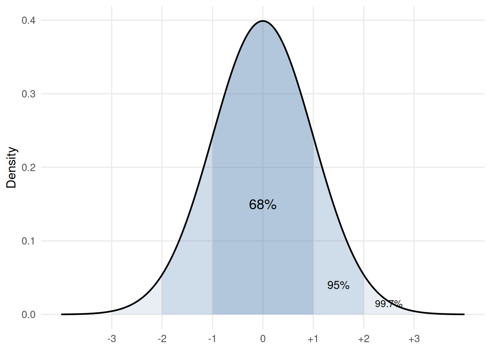

Probability - Pre-Reading
Complete this material before your first workshop session. It carries the vocabulary you will need in the room.
Video: population, sample, and what a variable is
NoteWatch before class
After watching, you should be able to state the difference between a population and a sample.
Reading: probability and the sampling idea
Two directions of reasoning
Probability and statistics get talked about together a lot. They are closely related but not identical concepts. Probability theory is the “doctrine of chances”1. It’s a branch of mathematics that tells you how often different kinds of events will happen.
The following are simple examples of things you can answer using probability theory:
- If both parents are heterozygous (Aa), what fraction of offspring show the recessive phenotype?
The cross Aa × Aa gives genotypes AA, Aa, aA, and aa with equal probability. Only aa (one out of four) shows the recessive phenotype.
- If a clutch has eight eggs and each is equally likely to be male or female, how likely is it that all eight are female?
Each egg has probability 1/2 of being female, and the eggs are independent, so the probability that all eight are female is (1/2)8 = 1/256 ≈ 0.004.
- A seabird lays two eggs. Each hatches independently with probability 0.8. What is the probability that both hatch?
The two events are independent, so the probability that both occur is 0.8 × 0.8 = 0.64.
Statistics works in the opposite direction to probability. In probability you know the process that generates data and you work out what the data are likely to look like. In statistics you have the data and you work backwards to learn how it was generated.
A coin is fair — what proportion of heads will I see in 100 flips? That is probability. I saw 73 heads in 100 flips — is the coin fair? That is statistics. Every method in this course is a tool for reasoning backwards from data to the process that produced them.
What probability means in this course
The word “probability” can mean several things. This course uses the frequentist definition: the probability of an event is the proportion of times it occurs in a long run of identical repetitions. Flip a fair coin ten times and you might see seven heads. Flip it a hundred times and the proportion of heads will be closer to one-half. Flip it ten thousand times and closer still. Our working definition of probability is that long-run proportion.
NoteInteractive demonstration
No flips yet. Press a button to start.
| After | Proportion heads | Distance from 0.5 |
|---|
The solid line is the run in progress. Faint lines are runs you have already finished. The dashed line is 0.5.
The crucial feature of the frequentist definition is that it says nothing about any single flip. It tells you what happens when you repeat the same process many times. That idea — what would happen if we repeated the process many times — is key to our statistics.
Random variables, distributions, and the sample space
A variable is a quantity that differs between observations: the mass of a bean, the height of a plant, the number of colonies on a plate. When the value you observe depends on chance (which bean you happened to pick, which plant you happened to measure), the variable is a random variable.
The sample space is the set of all values a random variable can take. For a coin it is {heads, tails}. For the mass of a bean it is every positive real number, though in practice the masses cluster within a limited range. A probability distribution assigns a probability to each subset of the sample space. It tells you how likely each value, or each range of values, is.
You can think of a probability distribution as a shape. Where the shape is tall, values are common; where it is low, values are rare. Different processes produce different shapes. A fair die gives a flat shape (each face equally likely) known as the uniform distribution. The masses of beans from a single variety give a shape that rises to a peak and tails off — most beans are near the middle, few are very light or very heavy known as the normal distribution.
The normal distribution
One distribution matters more than any other in this course. The normal distribution (also called the Gaussian distribution) is a symmetric, bell-shaped curve defined by two numbers: its mean (the centre) and its standard deviation (the width). Many biological measurements are approximately normal: heights, masses, concentrations, log-transformed counts.
The 68-95-99.7 rule
The 68-95-99.7 rule summarises how probability is spread across a normal distribution:
- About 68% of values fall within one standard deviation of the mean.
- About 95% fall within two standard deviations.
- About 99.7% fall within three standard deviations.
This rule gives you a rough sense of what is ordinary and what is surprising. If a single observation is three standard deviations from the mean of its distribution, it is unusual. You will use this intuition repeatedly.
The sampling distribution of the mean
So far the examples have been bean masses, which are roughly normal. In the workshop you will use a variable that is not: reaction time, which has a long right tail because a slow trial can be very slow but a fast trial cannot be faster than about 150 ms.
Suppose every student in your class has recorded their reaction time in a shared spreadsheet. You draw a random sample of 6 students and compute the mean of their reaction times. Now draw another 6, and compute the mean again. Each sample gives a different mean — not because anything changed, but because chance determined which students you happened to pick.
If you repeated this process many times and plotted all the sample means on a histogram, you would see a distribution. That distribution is the sampling distribution of the sample mean. Three things about it are important enough to state now, though we will develop them further in later sessions:
Centre. The sampling distribution is centred on the population mean. On average, the sample mean is correct.
Width. The sampling distribution is narrower than the distribution of individual values. Averaging reduces the variability.
Shape. The sampling distribution tends to be approximately normal, even when the individual values are not. You will see this in today’s workshop, and the next session.
The sampling distribution is one of our most important concepts. Everything that follows — standard errors, confidence intervals, p-values — are a consequence of the fact that a statistic computed from a random sample is itself random.
So each roll of the die is random, even if the distribution of values follows a known probability distribution
TipBring a device
In the workshop you will measure your own reaction time using the Human Benchmark reaction-time test. Bring a laptop or phone with a browser. The test runs five trials and reports your average in milliseconds; that single average is the number you will use.
Note
Primer: the unit of observation
Before you collect data, you need to know what counts as one independent observation. Getting this wrong inflates your sample size and with it every claim you make.
Consider a physiologist who measures blood glucose in 10 mice, taking three blood drops from each mouse. She has numbers, but she does not have 30 independent observations. The three drops from one mouse come from the same animal under the same conditions. They will be more alike than drops from different mice. The independent unit of observation is the , and the sample size is , not 30. The three drops per mouse are technical replicates — repeated measurements of the same unit — and they tell you about measurement precision, not about the population of mice.
Now consider a marine biologist who records the shell length of 50 mussels collected from a single rocky shore. Each mussel is a separate organism, so the independent unit of observation is the , and the sample size is . (Whether those 50 mussels tell you about mussels in general, or only about mussels on that particular shore, is a different question — one about the population the sample represents, not about what counts as one observation.)
The rule is: two observations are independent if knowing the value of one tells you nothing about the value of the other, beyond what you already knew from the population. When multiple measurements come from the same biological unit — the same mouse, the same plant, the same Petri dish — they are not independent of one another, and the unit, not the measurement, is the observation.
Bring this vocabulary to the workshop. You will need it in the first ten minutes.
Self-test
1. A population is
.
2. Under the frequentist definition, the probability of an event is its long-run across many identical repetitions.
3. If a measurement is normally distributed, approximately per cent of values lie within two standard deviations of the mean.
4. The sampling distribution of the sample mean is.
5. A researcher takes four leaf samples from each of six plants and measures chlorophyll concentration. The independent unit of observation is the , and the sample size is .